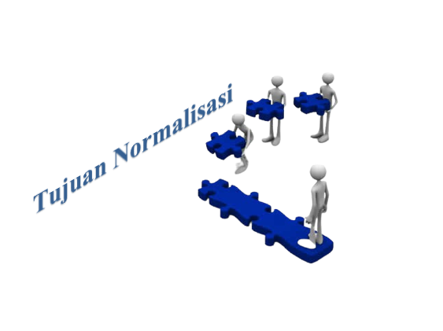

16
april
april
By admin | Kelompok 3.
Tujuan Normalisasi...
. Mengurangi Redundansi
. Mengurangi Ketergantungan Data
. Meningkatkan Konsistensi dan Integritas Data
. Memudahkan Perubahan Struktur
Normalisasi (normalize) merupakan salah satu cara pendekatan atau teknik yang digunakan dalam membangun desain logic database relation dengan menerapkan sejumlah aturan dan kriteria standard.
Tujuan & Tahapan Normalisasi
. Mengurangi Redundansi
. Mengurangi Ketergantungan Data
. Meningkatkan Konsistensi dan Integritas Data
. Memudahkan Perubahan Struktur
. Tahap Normalisasi dimulai dari tahap paling ringan (1NF) hingga paling ketat (5NF).
. Biasanya hanya sampai pada tingkat 3NF atau 4NF, karena sudah cukup memadai untuk menghasilkan tabel-tabel yang berkualitas baik.
. Urutan: 1NF, 2NF, 3NF, 4NF.
Bentuk tidak normal (unnormalized) merupakan kumpulan data yang direkam tidak ada keharusan dengan mengikuti suatu format tertentu atau sering di sebut ada beberapa kolom yang kosong di dalam tabel bentuk tidak normal.
Normal pertama (1NF) adalah suatu relasi atau tabel memenuhi normal pertama jika setiap atribut dari relasi tersebut hanya memiliki nilai tunggal dalam satu baris (record) dan semua kolom yang di dalam tabel harus berisi tunggal atau tidak ada yang duplikat.
Normalisasi kedua (2NF) , suatu relasi memenuhi relasi kedua jika relasi tersebut memenuhi normal pertama dan setiap atribut yang bukan kunci (non key) bergantung secara fungsional terhadap kunci utama (Primary key) atau jika ada 4 bagian tabel maka hanya di gunakan/dipakai 3 tabel saja.
Normalisasi ketiga (3 NF), suatu relasi memenuhi normal ketiga jika dan hanya jika relasi tersebut memenuhi normal kedua dan setiap atribut bukan kunci, tidak mempunyai transitive functional dependency kepada kunci utama.
Normalisasi Tingkat Keempat (4NF) bertujuan untuk mengatasi masalah ketergantungan multivariabel yang tidak relevan dalam tabel. Ini mengharuskan untuk memisahkan atribut yang berkaitan dengan ketergantungan multivariabel ke dalam tabel yang terpisah.